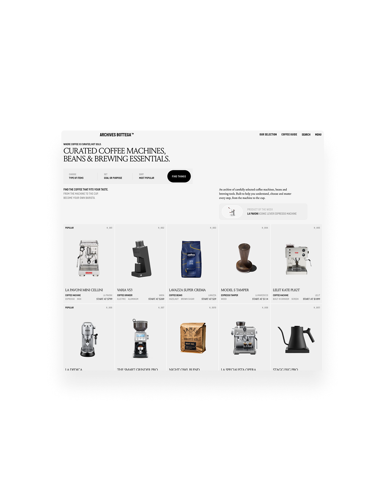

Archives Bottega®, a curated index of coffee machines, tools, places and rituals.
Visit website →
The Platform
Archives Bottega is an independent curatorial platform dedicated to coffee culture, craft, and the objects that shape daily rituals.
Archives Bottega brings together, in the form of a digital platform, a living index of coffee machines, grinders, roasters, tools, cafés, and the people who design, build, and operate them. From mechanical espresso machines to contemporary grinders, from independent roasters to enduring cafés, the platform documents objects and places chosen for their integrity, durability, and relevance.
Its mission is to restore meaning, clarity, and depth to the digital coffee landscape — often reduced to marketing noise, influencer trends, or purely technical comparisons. Archives Bottega offers a rigorous selection paired with a demanding editorial approach, designed to help individuals and professionals understand what truly matters in a coffee setup: materials, engineering choices, workflows, and long-term use.
In the long term, Archives Bottega aims to become an international reference for coffee equipment and culture: a trusted index for enthusiasts and professionals, a showcase for manufacturers and artisans, and a bridge between machines, cafés, and the rituals they enable. More than a platform, Archives Bottega positions itself as a cultural and practical archive — documenting coffee not as a trend, but as a craft shaped by time, repetition, and intention.
Heritage
Bottega is the Italian word for workshop.
Bottega is the Italian word for workshop.
A bottega is not a showroom. It is a place of work, learning, repetition, and transmission. Historically, it is where tools are used daily, where gestures are refined over years, and where objects earn their value through use rather than display.
This idea of the bottega deeply shaped my relationship with objects. Coffee, more than any other daily ritual, embodies this philosophy: the same gestures repeated every morning, the same machines maintained over decades, the same attention to detail that slowly builds mastery. A good coffee setup is not about novelty — it is about alignment between tools, environment, and intent.
Archives Bottega was born from this conviction. After years working in design, engineering, and digital systems, I wanted to create a place that treats coffee equipment with the seriousness it deserves. Not as lifestyle accessories, but as instruments — engineered, maintained, and chosen for a purpose.
I build Archives Bottega as a modern bottega: a meeting point between machines, places, and people who value precision, durability, and honest design. A space to document what works, why it works, and for whom it works — without hype, without shortcuts.
Coffee shapes our mornings, our focus, and our rhythms. The objects we use to prepare it matter. It is time to move beyond shallow comparisons and disposable machines, and to restore depth, understanding, and respect for the tools that accompany us every day.

